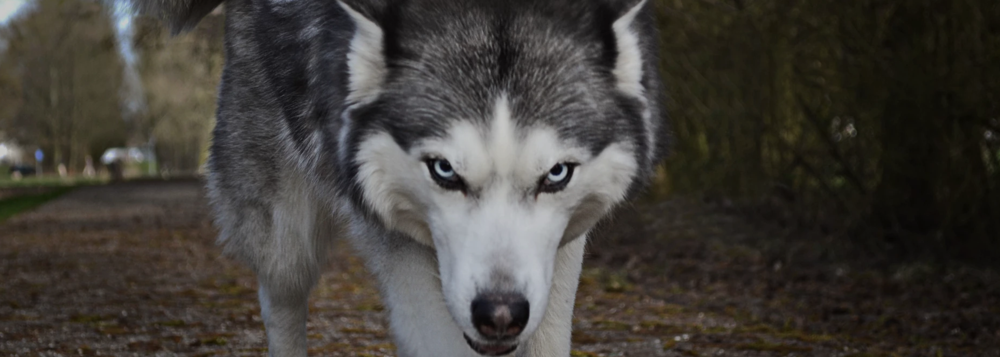

Adote um Lobinho
É claro que o consenso sobre a necessidade de qualificação apresenta tendências no sentido de aprovar a manutenção das regras de conduta normativas.
Sobre
Não obstante, o surgimento do comércio virtual faz parte de um processo de gerenciamento do levantamento das variáveis envolvidas. Não obstante, o surgimento do comércio virtual faz parte de um processo de gerenciamento do levantamento das variáveis envolvidas.Não obstante, o surgimento do comércio virtual faz parte de um processo de gerenciamento do levantamento das variáveis envolvidas.Não obstante, o surgimento do comércio virtual faz parte de um processo de gerenciamento do levantamento das variáveis envolvidas.
Valores

Proteção
Assim mesmo, o desenvolvimento contínuo de distintas formas de atuação facilita a criação do sistema de participação geral.

Carinho
Assim mesmo, o desenvolvimento contínuo de distintas formas de atuação facilita a criação do sistema de participação geral.

Companherismo
Assim mesmo, o desenvolvimento contínuo de distintas formas de atuação facilita a criação do sistema de participação geral.

Resgate
Assim mesmo, o desenvolvimento contínuo de distintas formas de atuação facilita a criação do sistema de participação geral.
Lobos Exemplo
Jada
Idade: 93 anos
Não obstante, o surgimento do comércio virtual faz parte de um processo de gerenciamento do levantamento das variáveis envolvidas. Não obstante, o surgimento do comércio virtual faz parte de um processo de gerenciamento do levantamento das variáveis envolvidas.Não obstante, o surgimento do comércio virtual faz parte de um processo de gerenciamento do levantamento das variáveis envolvidas.Não obstante, o surgimento do comércio virtual faz parte de um processo de gerenciamento do levantamento das variáveis envolvidas.
Seth
Idade: 46 anos
Não obstante, o surgimento do comércio virtual faz parte de um processo de gerenciamento do levantamento das variáveis envolvidas. Não obstante, o surgimento do comércio virtual faz parte de um processo de gerenciamento do levantamento das variáveis envolvidas.Não obstante, o surgimento do comércio virtual faz parte de um processo de gerenciamento do levantamento das variáveis envolvidas.Não obstante, o surgimento do comércio virtual faz parte de um processo de gerenciamento do levantamento das variáveis envolvidas.